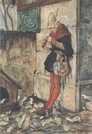
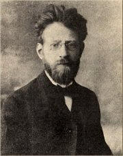
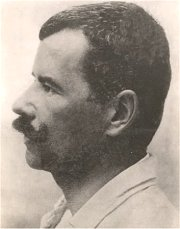

V únoru 1894 byla skupina studentù a mladıch dìlníkù falešnì obvinìna z tajného spolèování. Ve vykonstruovaném procesu s tzv. Omladinou bylo 68 pokrokáøù odsouzeno do vìzení, ale u roku 1895 byli amnestováni, vèetnì Neumanna.
|
ANARCHISTÉ A BUØIÈI
Vùdèí osobností èeského anarchistického hnutí byl spisovatel Stanislav Kostka Neumann, v jeho olšanské vile se scházeli revoltující mladíci. Obdobím radikálního odporu k spoleèenskım normám prošel také Viktor Dyk, Fráòa Šrámek, Karel Toman, František Gellner nebo Jiøí Mahen a Rudolf Tìsnohlídek. Pro tuto generaci spisovatelù se vilo oznaèení buøièi. ili bohémskım ivotem, jejich díla byla zakazována a øada z nich se dostala do konfliktu s rakouskımi úøady a strávila nìkolik mìsícù ve vìzení. V mládí je spojovalo pøátelství, ale bìhem 20. století se jejich cesty rozešly. Neumann se obrátil k novım smìrùm (vitalismus, civilismus, proletáøské umìní), Dyk se po vzniku samostatného Èeskoslovenska pøiklonil k politické pravici, Šrámek psal senzualistické knihy blízké vitalismu a impresionismu, Toman se vìnoval milostné lyrice a Gellnerùv ivot ukonèila 1. svìtová válka.
Ke zmínìnım autorùm mùeme pøiøadit i Petra Bezruèe, kterı se sice nehlásil pøímo k anarchismu, ale jeho tvorba mìla podobnı charakter i osud.
|
Anarchisté se hlásili k radikálnímu individualismu, vyznávali naprostou svobodu jednotlivce a bojovali proti všemu, co ji omezuje – spoleèenskım normám, právnímu øádu i státu a jeho institucím. Velmi èasto se dostávali do støetu s oficiální mocí. Nìkteøí stoupenci anarchismu se uchılili k nejkrajnìjším prostøedkùm a zosnovali atentáty na nejvyšší pøedstavitele vládnoucího reimu. V Rakousku-Uhersku to byla vrada císaøovny Albìty (Sisi) nebo arcivévody Ferdinanda d’Este. Vıznamnımi ideology anarchistického hnutí byli Godwin, Stirner, Proudhon, Bakunin, Kropotkin nebo Sorel. Manifest anarchistù èeskıch vyšel roku 1896.
|
Stanislav Kostka Neumann
(1875-1947)
Neumann pocházel z Prahy, kde také zemøel. Byl zatèen a odsouzen v procesu s tzv. Omladinou. Ve vìzení strávil 14 mìsícù. V jeho olšanské vile na ikovì se scházeli èeští anarchisté vèetnì spisovatelù (Šrámek, Toman, Gellner). Neumann byl velmi aktivním iniciátorem kulturního a spoleèenského dìní. Sám prošel bouølivım umìleckım i názorovım vıvojem od dekadence a symbolismu pøes anarchismus a k proletáøské poezii. Vydával anarchistickı èasopis Novı kult (1897-1905). Napsal øadu básnickıch sbírek a novinovıch èlánkù. V knihách Dìjiny lásky, Dìjiny eny a Francouzská revoluce zabrousil i do historie.
|
Neumannova poezie
Na zaèátku své literární dráhy vydal Neumann øadu básnickıch sbírek, které mìly blízko k dekadenci, symbolismu a vypjatému individualismu – Nemesis, bonorum custos (Spravedlnost, ochránkynì dobrıch), Jsem apoštol nového ití, Apostrofy hrdé a vášnivé, Satanova sláva mezi námi a Sen o zástupu zoufajících. Pozdìji ho zaujaly jiné moderní umìlecké smìry.
|

Neumann na Gellnerovì karikatuøe
Jaké je tvoje ivotní krédo? Zjisti pùvodní vıznam tohoto slova.
|
Viktor Dyk (1877-1931)
Dyk pocházel z Pšovky u Mìlníka, utopil se v moøi nedaleko jugoslávského Lopudu u Dubrovníku, kdy mu selhalo srdce. Na praském gymnáziu v itné ulici ho uèil dìjepis Alois Jirásek, vystudoval práva, ale ivil se jako novináø a spisovatel. Po Sládkovi pøevzal redigování èasopisu Lumír (1907-1931). Bìhem 1. svìtové války byl pùl roku vìznìn kvùli podezøení z velezrady. Po vzniku Èeskoslovenska se stal politikem národnì demokratické strany. Proslul jako satirik a nesmlouvavı polemik. Kromì øady básnickıch sbírek je autorem lyrickoepické skladby Milá sedmi loupeníkù, dramatizace Cervantesova románu Zmoudøení dona Quijota, novely Krysaø nebo sbírky povídek Píseò o vrbì. Napsal libreto pro Janáèkovu operu Vılety pánì Brouèkovy a pøekládal prokleté básníky. Jeho kniha Buøièi dala jméno celé generaci spisovatelù.
Dyk na Gellnerovì karikatuøe
|
Dykovy básnì
Dyk zaèínal jako dekadent a symbolista, jak napovídají názvy jeho básnickıch sbírek A porta inferi (Pøed branami pekla) a Síla ivota. Vrcholem jeho tvorby jsou satirické knihy Marnosti, Satiry a sarkasmy a Pohádky z naší vesnice. Ve vìzení napsal slavnou báseò Zemì mluví, kterou pozdìji zaøadil do jedné ze sbírek z
tzv. váleèné tetralogie – Lehké a tìké kroky, Anebo, Okno, Poslední rok. Jeho poslední básnická sbírka nese název Devátá vlna.
Viktor Dyk: Krysaø
Temná próza zpracovává známou legendu o krysaøi, kterı zbavil mìsto Hameln obtínıch krys, ale kdy nedostal za svou práci zaplaceno, pomocí magické píšaly stejnım zpùsobem utopil jeho obyvatele...
Dykùv krysaø je tajemnım poutníkem bez domova. Po pøíchodu do Hameln se zamiluje do Agnes, která ale èeká dítì s Kristiánem. Z nešastné lásky se Agnes pomine, vystoupá na horu Koppel, o ní praví legenda, e tudy vede cesta do krásné zemì sedmihradské, spadne do propasti a utopí se. Nešastnı krysaø dovede k propasti všechny obyvatele. Zachrání se pouze bláznivı rybáø Sepp Jörgen a nevinné dítì.
Temnou atmosféru umocòují Dykovy popisy nebo motiv krysaøova setkání s Faustem.
|

Jak na tebe pùsobí Dykovy básnì?
Ke kterému spisovateli má Dyk nejblíe? Proè?
Jakı je rozdíl mezi epigramem a epitafem?
Kterı spisovatel pøed Dykem nazval svou knihu Pohádky z naší vesnice?
Zjisti, proè byl Dyk vìznìn.

Hanuš Schwaiger: Krysaø
Co si myslíš o postavì krysaøe?
Jak na tebe pùsobí ukázky z Dykova Krysaøe?
Historikové našli v legendì o krysaøi reálnı základ. Støedovìké nìmecké mìsto prı skuteènì opustili jeho obyvatelé – zøejmì odešli jako kolonizátoøi do Èech zakládat nové osady.
|
Fráòa Šrámek (1877-1952)
Šrámek se narodil v Sobotce a zemøel v Praze. Gymnaziální léta strávil v Písku. Byl vìznìn za úèast na protistátních demonstracích a za báseò Píšou mi psaní.
V mládí spolupracoval s Neumannem a hlásil se k anarchismu. Pozdìji se spøátelil s Karlem Èapkem a docházel mezi páteèníky. Jeho buøièství se nejvíce odrazilo v prvních básnickıch sbírkách ivota bído, pøec tì mám rád a Modrı a rudı. Pozdìji ho oslovil impresionismus a vitalismus.
|
Šrámek: Modrı a rudı
Do básnické sbírky Modrı a rudı zaøadil Šrámek øadu skladeb ze své prvotiny ivota bído, pøec tì mám rád. Jádrem sbírky jsou protiváleèné básnì (Raport) a autorovo vyznání ze sympatií k anarchistickému hnutí (Píšou mi psaní). Šrámek opìvuje bohémskı ivot, kterı odporuje konvenèní morálce (Svatba). Modrá barva v názvu evokuje vojenskou uniformu, rudá symbolizuje anarchismus.
|

Šrámek z doby vìznìní
Co dalšího mùe symbolizovat èervená a modrá barva?
|
František Gellner (1881-1914)
Gellner pocházel z Mladé Boleslavi a zøejmì padl na frontì v Halièi (oficiálnì byl prohlášen za nezvìstného). il bohémskım ivotem, studoval v Mnichovì a Paøíi malíøství a ivil se jako ilustrátor zahranièních i èeskıch (Lidové noviny) èasopisù. Vydal básnické sbírky Po nás a pøijde potopa! a Radosti ivota a nìkolik fejetonù i próz – Cesta do hor a jiné povídky. Posmrtnì vyšly Nové verše a rozsáhlá veršovaná skladba Don Juan.
|
Gellnerova poezie
Gellnerovy básnì jsou plné revolty, pohrdání mìšáckou morálkou a okázalého bohémství. Autor vystupuje jako cynik a ironik, kterı vnímá svìt s nebıvalım nadhledem. Zároveò ale z nìkterıch básní èiší zoufalá potøeba lásky.
|

Jak se ti líbí Gellnerovy básnì?
Souhlasíš s jeho pohledem na svìt? Proè?
|
Karel Toman (1877-1946)

Antonín Bernášek se narodil v Kokovicích u Slaného, zemøel v Praze. Nedokonèil studium práv, il bohémskım ivotem a toulal se po Evropì. Pod pseudonymem Karel Toman pøispíval do øady èeskıch èasopisù. Vrcholem jeho tvorby je tematicky sevøenı a formálnì dokonalı cyklus 12 básní Mìsíce.
|
Tomanova poezie
Tomanovo dílo není pøíliš rozsáhlé. Vìnoval se pøedevším milostné a meditativní lyrice. Jeho poezie je plná rozporù – na jedné stranì vyznává
revoltu a anarchismus jako jeho generaèní druhové, ale na stranì druhé touí po ivotní harmonii. Èasto unikal pryè do ciziny, o to intenzivnìji se ovšem hlásil stesk po domovì. Hluboce proíval pocit vydìdìnectví a osamìlosti. Toman debutoval básnickou sbírkou Pohádky krve, následovaly sbírky Torzo ivota, Melancholická pou, Sluneèní hodiny, Verše rodinné a jiné, Mìsíce, Hlas ticha a Stoletı kalendáø.
|
Gellnerùv návrh na obálku Tomanovy básnické sbírky Sluneèní hodiny
Která z Tomanovıch básní tì zaujala nejvíce? Proè?
|
Petr Bezruè (1867-1958)
Vladimír Vašek se narodil v Opavì a zemøel v Olomouci. Jeho otec se snail dokázal nepravost Rukopisu zelenohorského a královédvorského, ale v roce 1879 to byl zcela ojedinìlı názor a vyslouil si za nìj oznaèení zrádce národa... Syn se ivil jako poštovní úøedník. Ètyøi roky (1898-1902) byl vánì nemocen, v této dobì vznikly jeho nejlepší básnì. Pouíval øadu pseudonymù – Alter ego, Kuba Stopìruntík, Petr Bezperák nebo Smil z Rolnièky, ale nejznámìjším se stal Petr Bezruè. V dobì 1. sv. války byl zatèen a obvinìn z velezrady pro domnìlé autorství protirakouskıch básní, které vyšly v paøíském èasopise èeskıch emigrantù pod jménem Petr Bezruè. Naštìstí se prokázalo, e šlo o podvrhy a spisovatel byl po 6 mìsících propuštìn. Kromì básnické sbírky Slezské písnì vydal u jen nìkolik básní, napø. Stukonoska modrá, a sbírku povídek – Povídky ze ivota. V závìru ivota si uíval oficiálních poct, stal se z nìho jazykovı purista a stylizoval se do nové role starého ještìra. Generaènì ani názorovì mezi anarchisty nepatøí, ale mìl podobnı osud a jeho tvorba má k buøièství blízko.
V minulosti se opakovanì objevily spory o autorství Slezskıch písní. Co k nim mohlo dát podnìt?
|
Petr Bezruè: Slezské písnì
Bezruè je „autorem jedné knihy“. Na básnické sbírce Slezské písnì pracoval celı ivot, nìkdy i ke škodì jednotlivıch básní. Pùvodnì své básnì zasílal anonymnì Janu Herbenovi, kterı je tiskl v èasopise Èas. Roku 1903 vyšlo tzv. Slezské èíslo Besed Èasu s 31 básnìmi Petra Bezruèe. Slezské písnì vyšly samostatnì roku 1909. První vydání obsahovalo 45 básní, 9. vydání u 79 skladeb. Pro Bezruèovy verše je typické autentické regionální umístìní, a to jazykové i místopisné. Vynikají syntézou realismu, symbolismu a sociálních motivù. Autor se stylizuje do role barda slezského lidu a brání ho proti Nìmcùm, idùm, Polákùm, boháèùm, Praákùm a dalším nepøátelùm... Ve sbírce najdeme sociální balady – Maryèka Magdonova, Kantor Halfar, intimní lyriku – Labutinka, ohlasy lidové slovesnosti – Mohelnice, spoleèenskou lyriku – Praga caput regni i básnì vyzıvající k revoltì – Ostrava.
Konfiskaèní vınos k cenzurnímu zákazu Bezruèovıch básní Škaredı zjev a Den Palackého
|

Jakı je tvùj názor na Bezruèovu poezii?
Je jeho nesnášenlivost oprávnìná?

První vydání Bezruèovıch Slezskıch písní z roku 1909
Bezruèovy verše mají daktylskı spád. Co to znamená?
Jakı je rozdíl mezi trochejem, jambem a daktylem?
Proè byl cenzurován Škaredı zjev?
|
Internetové stránky
Dyk
Dyk: Krysaø
Hameln
Toman: Mìsíce
Šrámkova Sobotka
Gellner: Hoøká láska
Gellner
Mahen
Tìsnohlídek
Exkurze
Hameln
Filmy
Krysaø, reie J.Bárta (loutkovı film)
Tipy
Martin Bastl: Anarchismus v Èeské republice
Anarchismus
ÈSAF
A-kontra, èasopis
Hugo Boettinger: Viktor Dyk
|
Doporuèená èetba
Bezruè, Petr: Jen jedenkrát, Èeskoslovenskı spisovatel, Praha 1980
Bezruèùv hlas, Památník pìvce Slezskıch písní, Èin, Praha 1940
Buriánek, František: Bezruè, Toman, Gellner, Šrámek, Èeskoslovenskı spisovatel, Praha 1955
Buriánek, F.: Generace buøièù, Univerzita Karlova, Praha 1968
Buriánek, F.: Karel Toman, Melantrich, Praha 1985
Buriánek, F.: Petr Bezruè, Èeskoslovenskı spisovatel, Praha 1987
Dyk, Viktor: Dramata a prózy, NLN, Praha 2003 (Zmoudøení dona Quijota, Krysaø...)
Dyk, V.: Opustíš-li mne..., Èeskoslovenskı spisovatel, Praha 1973
Dyk, V.: Pìt básnickıch knih, NLN, Praha 2003 (Milá sedmi loupeníkù, Okno...)
Dyk, V.: Promenáda Diogenova, Èeskoslovenskı spisovatel, Praha 1990
Gellner, František: Verše, Èeskoslovenskı spisovatel, Praha 1980
Hrabák, Josef: Rudolf Tìsnohlídek, Melantrich, Praha1982
Med, Jaroslav: Viktor Dyk, Melantrich, Praha 1988
Mourková, Jarmila: Buøièi a obèané, Èeskoslovenskı spisovatel, Praha 1988
Myšièka, Z.: Viktor Dyk, Praha 1971
Neumann, Stanislav Kostka: Básnì I, SNKLU, Praha 1962
Polák, Josef: Petr Bezruè, Melantrich, Praha 1977
Šrámek, Fráòa: Modrı a rudı, Støíbrnı vítr, Léto, Splav, NLN, Praha 2000
Toman, Karel: Básnì, Èeskoslovenskı spisovatel, Praha 1977
Toman, K.: Addio’ mecenáši, Èeskoslovenskı spisovatel, Praha 1970
Toman, K.: Hlas hlubin, Odeon, Praha 1982
Tomek, Václav: Èeskı anarchismus a jeho publicistika 1890-1925, Filosofia, Praha 2002
Urbanec, Jiøí: Petr Bezruè – Vladimír Vašek, 1904-1928, Základní ivotopisná data, Profil, Ostrava 1989
Vlašín, Štìpán: Jiøí Mahen, Melantrich, Praha 1972
V tvou korunu, ivote, Vıbor z básnické tvorby F.Gellnera, K.Tomana, F.Šrámka, Práce, Praha 1989
|
Vypracuj písemnı referát o nìkteré z uvedenıch knih.
Èasopis Novı kult z roku 1901

Obálka Neumannovy básnické sbírky Satanova sláva mezi námi
|
|